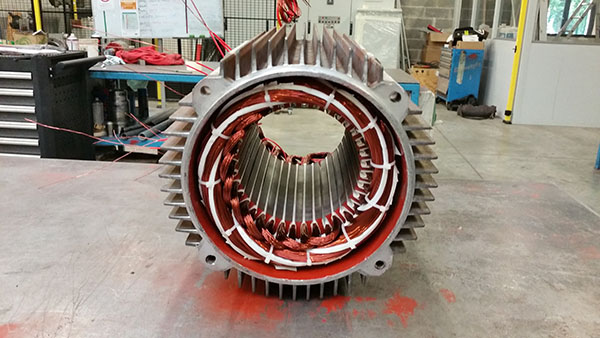
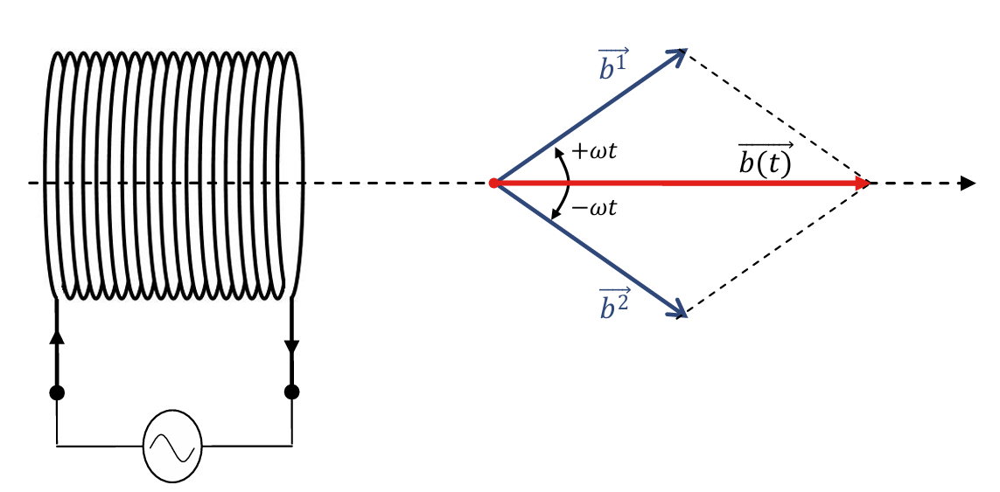
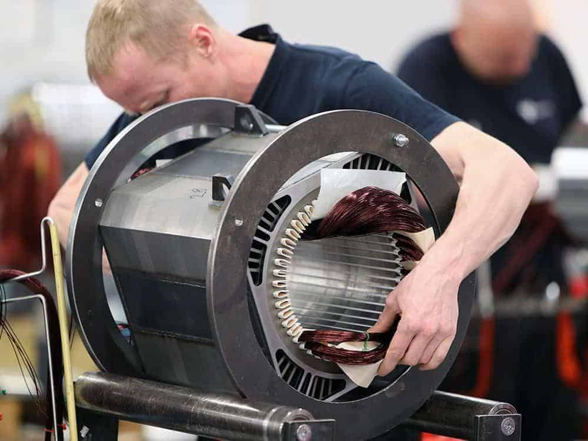

MODULE DE FORMATION
Genèse et Évolution Technique
L'histoire du moteur monophasé est intimement liée à l'électrification rurale du début du 20ème siècle. Alors que l'industrie bénéficiait du triphasé, les zones résidentielles n'avaient accès qu'à deux fils. Il fallait donc concevoir des machines capables de créer leur propre champ tournant.
Les premiers essais utilisaient des bagues de déphasage (spire de Frager) au rendement médiocre. L'innovation majeure fut l'introduction de l'enroulement auxiliaire résistif, puis capacitif, permettant d'obtenir un couple de démarrage vigoureux. Aujourd'hui, avec l'avènement des variateurs de fréquence électroniques, le bobinage évolue vers des matériaux composites capables de supporter des fréquences de découpage élevées (PWM), mais le principe fondamental de répartition du cuivre dans les encoches reste un art inchangé.

Fig 1. Vue en coupe d'un stator bobiné
2.1 Principe de la machine monophasée
Rôle du stator
Le stator est la partie fixe du moteur. Il porte les enroulements qui, lorsqu'ils sont parcourus par des courants alternatifs, génèrent le champ magnétique nécessaire au fonctionnement.
Champ magnétique alternatif
Contrairement au triphasé qui crée naturellement un champ tournant, une phase unique crée un champ pulsant (fixe dans l'espace, variable en amplitude). C'est pourquoi le moteur monophasé ne peut pas démarrer seul sans artifice.
Nécessité du bobinage
Le bobinage est l'art de répartir les conducteurs dans les encoches pour transformer ce champ pulsant en champ tournant (via une phase auxiliaire) et maximiser le couple tout en minimisant les harmoniques.
Mécanique du Champ Magnétique
Le problème fondamental est simple : une bobine alimentée par une tension alternative $u(t) = U \sin(\omega t)$ crée un champ magnétique pulsant, et non tournant. Le rotor vibre sur place mais ne démarre pas.
1. Théorème de Leblanc
Leblanc a démontré qu'un champ pulsant d'amplitude fixe est mathématiquement équivalent à la somme de deux champs tournants inverses :
Comme ces deux champs génèrent des couples opposés égaux au démarrage, le couple résultant est nul.
2. Création du Champ Tournant
Pour démarrer, on ajoute une phase auxiliaire. En insérant un condensateur en série avec cet enroulement, on déphase le courant (idéalement de 90°). Le champ magnétique devient alors elliptique (proche du circulaire), brisant la symétrie et permettant au moteur de s'accrocher au champ direct.

Fig 2. Vecteurs tournants inverses
Topologies de Bobinage
La répartition des encoches est souvent asymétrique : 2/3 pour la puissance (Principal) et 1/3 pour le démarrage (Auxiliaire).
1. Enroulement Concentrique

Bobines de tailles différentes, même axe. Facile à insérer manuellement lors des réparations.
2. Enroulement Enchevêtré
Bobines identiques décalées. Meilleure répartition du cuivre, souvent utilisé en série industrielle.
Architecture des Encoches
Encoches par pôle et phase ($q$)
- $q$ Entier : Symétrie parfaite, calculs simplifiés. Standard pour les petits moteurs.
- $q$ Fractionnaire : Configuration avancée pour réduire le "cogging torque" (vibrations magnétiques) et rendre la rotation plus fluide.
Remplissage ($K_{remp}$)
Le taux de remplissage de l'encoche ne doit pas dépasser 75% pour permettre l'insertion des isolants et des cales de fermeture.
Paramètres Fondamentaux
La conception repose sur des équations précises pour garantir le rendement et le couple.
1. Pas Polaire (\(Y_p\))
2. Spires par phase (\(N_s\))
3. Facteur de Bobinage (\(K_b\))
Indique la qualité de la f.é.m induite (proche de 1 = optimal).
Coefficients Détails
Coefficient de Distribution (\(K_d\))
Coefficient de Raccourcissement (\(K_p\))
Coefficient d'Inclinaison (\(K_i\))
Pour les encoches inclinées d'un angle \(\beta\) (réduction du bruit).
Procédure de Bobinage Monophasé
Étapes standardisées pour la réalisation d'un bobinage statique.
- Préparation : Nettoyage du stator et contrôle des encoches.
- Isolation : Insertion de papier isolant (Nomex / Mylar / DMD) dans les encoches.
- Définition du pas : Calcul du pas polaire et choix du pas de bobine (diamétral ou raccourci).
- Confection : Tournage des bobines sur un gabarit concentrique adapté.
- Insertion : Placement des conducteurs en respectant le sens du courant (Aller / Retour).
- Répartition : Positionnement des enroulements principal et auxiliaire avec le déphasage requis.
- Câblage : Connexion des bobines en série ou parallèle selon la tension nominale.
- Frettage : Ligature des têtes de bobines pour la tenue mécanique.
- Imprégnation : Vernissage pour renforcer l’isolation et la rigidité.
- Contrôle : Vérification de la continuité et de l’isolement.
Matériel & Outillage
Fil de cuivre émaillé, papier isolant classe F, maillet en plastique, cale en fibre, vernis d'imprégnation.

Contrôle Qualité
- Mesure de résistance des enroulements (Ohmmètre).
- Test d'isolement à la terre (Mégohmmètre).
- Vérification de l'indice de polarisation.
Démonstration Vidéo
Survolez pour un aperçu, cliquez pour voir sur YouTube.